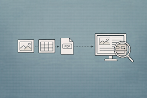

graph LR
A["Plain Text<br/>(Markdown, TXT)"] --> B["Simple PDF<br/>(Text-only)"]
B --> C["Semi-Structured<br/>(Text + Tables)"]
C --> D["Multi-Modal<br/>(Text + Tables + Images)"]
D --> E["Scanned/Complex<br/>(OCR + Layout)"]
style A fill:#27ae60,color:#fff,stroke:#333
style B fill:#4a90d9,color:#fff,stroke:#333
style C fill:#f5a623,color:#fff,stroke:#333
style D fill:#e67e22,color:#fff,stroke:#333
style E fill:#e74c3c,color:#fff,stroke:#333
Retrieval over Images, Tables, and PDFs
Indexing and retrieving from complex documents with vision-language models, multi-vector retrieval, and LlamaParse
Keywords: multimodal RAG, LlamaParse, ColPali, multi-vector retriever, vision-language model, PDF parsing, table extraction, image retrieval, Unstructured, GPT-4o, document understanding, OCR, layout detection, semi-structured data, LlamaIndex, LangChain

Introduction
Most RAG tutorials assume your documents are clean text. In reality, the documents that matter most — financial reports, research papers, technical manuals, slide decks, medical records — are visually rich PDFs packed with tables, charts, diagrams, and images that carry critical information.
Standard text-based RAG fails on these documents in predictable ways:
- Tables get flattened into meaningless strings when extracted as raw text
- Charts and diagrams are invisible to text-only pipelines — they’re simply discarded
- Page layouts with multi-column formatting, sidebars, and footnotes produce garbled text
- Scanned documents yield nothing without OCR, and OCR introduces errors
The gap is stark. LangChain’s benchmark on investor slide decks showed that text-only RAG scored 20% accuracy on questions about visual content, while multimodal approaches reached 60–90%. The information is there — it’s just locked in visual formats that text pipelines can’t see.
This article covers the full spectrum of solutions: from intelligent document parsing (LlamaParse, Unstructured) to multi-vector retrieval strategies, vision-based document embeddings (ColPali), and end-to-end multimodal RAG pipelines in LlamaIndex and LangChain.
The Problem: Why Text Extraction Breaks
What Gets Lost
Consider a typical financial report PDF. A standard text extraction pipeline (PyPDF, pdfplumber) produces output like:
Revenue Q1 Q2 Q3 Q4
Product A 12.3 14.1 15.8 18.2
Product B 8.7 9.2 10.1 11.5
Total 21.0 23.3 25.9 29.7If you’re lucky. More often you get:
Revenue Q1 Q2 Q3 Q4 Product A 12.3 14.1 15.8 18.2 Product B 8.7 9.2
10.1 11.5 Total 21.0 23.3 25.9 29.7Or worse — columns merged, rows split, headers detached from data. When this garbage gets chunked and embedded, the resulting vectors are meaningless. A query like “What was Product A revenue in Q3?” retrieves chunks that contain the right numbers but in the wrong structure, leading to hallucinated answers.
The Document Complexity Spectrum
| Document Type | Example | Text Extraction Quality | Solution |
|---|---|---|---|
| Plain text | Markdown, code | Perfect | Standard RAG |
| Simple PDF | Text-only reports | Good | PyPDF / pdfplumber |
| Semi-structured | Tables + text | Poor for tables | Unstructured / LlamaParse |
| Multi-modal | Charts, diagrams, photos | Tables degraded, images lost | Multi-vector retriever + VLM |
| Scanned | Paper scans, old docs | Nothing without OCR | OCR + layout detection |
Approach 1: Intelligent Document Parsing
The first strategy is to extract structure faithfully before embedding. Instead of treating PDFs as flat text, use parsers that understand document layout.
LlamaParse
LlamaParse is LlamaIndex’s document parsing service that uses vision-language models to understand page layout and extract structured content — including tables rendered as proper Markdown, image descriptions, and hierarchical sections.
from llama_cloud import LlamaCloud, AsyncLlamaCloud
client = AsyncLlamaCloud(api_key="llx-...")
# Upload and parse a document
file_obj = await client.files.create(
file="./quarterly_report.pdf",
purpose="parse",
)
result = await client.parsing.parse(
file_id=file_obj.id,
tier="agentic", # highest quality — uses VLM for layout understanding
version="latest",
output_options={
"markdown": {
"tables": {
"output_tables_as_markdown": True, # tables as Markdown tables
},
},
"images_to_save": ["screenshot"], # save page screenshots
},
expand=["text", "markdown", "items", "images_content_metadata"],
)
# Access structured markdown output
for page in result.markdown.pages:
print(page.markdown)
# Access extracted tables programmatically
for page in result.items.pages:
for item in page.items:
if hasattr(item, "rows"): # table item
print(f"Table on page {page.page_number}: "
f"{len(item.rows)} rows")LlamaParse tiers:
| Tier | Method | Best For | Cost |
|---|---|---|---|
| Fast | Rule-based extraction | Simple text-only PDFs | Lowest |
| Standard | Layout detection + OCR | Semi-structured documents | Medium |
| Agentic | Vision-language model | Complex layouts, figures, tables | Highest |
Integration with LlamaIndex RAG:
from llama_index.core import VectorStoreIndex, Settings
from llama_index.embeddings.openai import OpenAIEmbedding
from llama_index.llms.openai import OpenAI
Settings.embed_model = OpenAIEmbedding(model="text-embedding-3-small")
Settings.llm = OpenAI(model="gpt-4o-mini", temperature=0)
# LlamaParse returns Documents with rich markdown
# Tables are preserved as proper Markdown tables
# Images get text descriptions
index = VectorStoreIndex.from_documents(
parsed_documents, # from LlamaParse
show_progress=True,
)
query_engine = index.as_query_engine(similarity_top_k=5)
response = query_engine.query("What was Product A revenue in Q3?")Unstructured
Unstructured is an open-source library that partitions documents into typed elements — text blocks, tables, images, headers — using layout detection models.
from unstructured.partition.pdf import partition_pdf
elements = partition_pdf(
filename="./quarterly_report.pdf",
strategy="hi_res", # uses layout detection model (YOLOX)
infer_table_structure=True, # extract table structure
extract_images_in_pdf=True, # extract embedded images
extract_image_block_output_dir="./extracted_images",
)
# Elements are typed: NarrativeText, Table, Image, Title, etc.
tables = [el for el in elements if el.category == "Table"]
texts = [el for el in elements if el.category == "NarrativeText"]
images = [el for el in elements if el.category == "Image"]
print(f"Found {len(tables)} tables, {len(texts)} text blocks, "
f"{len(images)} images")
# Tables include HTML representation
for table in tables:
print(table.metadata.text_as_html) # <table><tr><td>...How Unstructured partitions a PDF:
graph TD
A["PDF Document"] --> B["Remove Embedded<br/>Image Blocks"]
B --> C["YOLOX Layout<br/>Detection"]
C --> D["Bounding Boxes:<br/>Tables, Titles, Text"]
D --> E["Extract Table<br/>Structure (HTML)"]
D --> F["Extract Section<br/>Titles"]
D --> G["Extract Text<br/>Blocks"]
D --> H["Extract Images"]
E --> I["Typed Elements<br/>with Metadata"]
F --> I
G --> I
H --> I
style A fill:#4a90d9,color:#fff,stroke:#333
style B fill:#f5a623,color:#fff,stroke:#333
style C fill:#9b59b6,color:#fff,stroke:#333
style D fill:#e67e22,color:#fff,stroke:#333
style E fill:#27ae60,color:#fff,stroke:#333
style F fill:#27ae60,color:#fff,stroke:#333
style G fill:#27ae60,color:#fff,stroke:#333
style H fill:#27ae60,color:#fff,stroke:#333
style I fill:#1abc9c,color:#fff,stroke:#333
Comparing Document Parsers
| Parser | Open Source | Tables | Images | OCR | Layout Detection | Best For |
|---|---|---|---|---|---|---|
| PyPDF | Yes | Poor | No | No | No | Simple text PDFs |
| pdfplumber | Yes | Good (rule-based) | No | Basic | No | Tables with clear lines |
| Unstructured | Yes | Good (ML) | Yes | Yes | YOLOX | General-purpose, self-hosted |
| LlamaParse | API | Excellent (VLM) | Yes | Yes | VLM-based | Complex layouts, highest quality |
| Docling (IBM) | Yes | Good | Yes | Yes | DocLayNet | Enterprise, structured output |
| Surya | Yes | Good | No | Yes | Layout model | OCR-focused, multilingual |
Approach 2: Multi-Vector Retrieval
Even with good parsing, a fundamental mismatch remains: tables and images don’t embed well as text. A table of numbers produces a poor embedding because embedding models are trained on natural language, not structured data.
The multi-vector retriever pattern solves this by decoupling what you index from what you retrieve:
- Generate a natural language summary of each table/image (optimized for retrieval)
- Embed the summary (what you search against)
- Store the original table/image (what you pass to the LLM)
At query time, you match against summaries but feed raw content to the LLM.
graph TD
A["Document"] --> B["Parser<br/>(Unstructured / LlamaParse)"]
B --> C["Text Chunks"]
B --> D["Tables"]
B --> E["Images"]
C --> F["Embed Text"]
D --> G["LLM: Summarize Table"]
E --> H["VLM: Describe Image"]
G --> I["Embed Summary"]
H --> J["Embed Description"]
F --> K["Vector Store<br/>(Summaries + Embeddings)"]
I --> K
J --> K
C --> L["Doc Store<br/>(Raw Content)"]
D --> L
E --> L
M["Query"] --> K
K -->|"Retrieve matching<br/>summary IDs"| L
L -->|"Return raw content<br/>(text, table, image)"| N["LLM / VLM<br/>Generation"]
M --> N
N --> O["Answer"]
style A fill:#4a90d9,color:#fff,stroke:#333
style B fill:#f5a623,color:#fff,stroke:#333
style C fill:#27ae60,color:#fff,stroke:#333
style D fill:#e67e22,color:#fff,stroke:#333
style E fill:#9b59b6,color:#fff,stroke:#333
style G fill:#e67e22,color:#fff,stroke:#333
style H fill:#9b59b6,color:#fff,stroke:#333
style K fill:#C8CFEA,color:#fff,stroke:#333
style L fill:#C8CFEA,color:#fff,stroke:#333
style N fill:#e74c3c,color:#fff,stroke:#333
style O fill:#1abc9c,color:#fff,stroke:#333
LangChain: Multi-Vector Retriever for Tables
from langchain_openai import ChatOpenAI, OpenAIEmbeddings
from langchain_core.prompts import ChatPromptTemplate
from langchain_core.output_parsers import StrOutputParser
from langchain.storage import InMemoryByteStore
from langchain.retrievers.multi_vector import MultiVectorRetriever
from langchain_community.vectorstores import FAISS
from langchain_core.documents import Document
import uuid
llm = ChatOpenAI(model="gpt-4o-mini", temperature=0)
embeddings = OpenAIEmbeddings(model="text-embedding-3-small")
# Parse document into typed elements
# (assume tables and texts extracted via Unstructured)
table_elements = [...] # raw table HTML/markdown
text_elements = [...] # text blocks
# --- Step 1: Summarize tables ---
TABLE_SUMMARY_PROMPT = ChatPromptTemplate.from_template(
"Summarize the following table in natural language. "
"Describe what metrics it shows, key values, and trends.\n\n"
"Table:\n{table}"
)
summarize_chain = TABLE_SUMMARY_PROMPT | llm | StrOutputParser()
table_summaries = []
for table in table_elements:
summary = summarize_chain.invoke({"table": table})
table_summaries.append(summary)
# --- Step 2: Build multi-vector retriever ---
vectorstore = FAISS.from_texts([], embeddings)
docstore = InMemoryByteStore()
retriever = MultiVectorRetriever(
vectorstore=vectorstore,
byte_store=docstore,
id_key="doc_id",
)
# Add text chunks (summary = text itself)
text_ids = [str(uuid.uuid4()) for _ in text_elements]
retriever.vectorstore.add_documents(
[Document(page_content=t, metadata={"doc_id": id_})
for t, id_ in zip(text_elements, text_ids)]
)
retriever.docstore.mset(
list(zip(text_ids, [t.encode() for t in text_elements]))
)
# Add table summaries (index summary, store raw table)
table_ids = [str(uuid.uuid4()) for _ in table_elements]
retriever.vectorstore.add_documents(
[Document(page_content=summary, metadata={"doc_id": id_})
for summary, id_ in zip(table_summaries, table_ids)]
)
retriever.docstore.mset(
list(zip(table_ids, [t.encode() for t in table_elements]))
)
# --- Step 3: Query ---
# Retriever matches against summaries, returns raw content
docs = retriever.invoke("What was Product A revenue in Q3?")
# docs contains the RAW table, not the summaryLlamaIndex: Multi-Modal Index with Summaries
from llama_index.core import VectorStoreIndex, Settings
from llama_index.core.schema import TextNode, ImageNode
from llama_index.core.node_parser import SentenceSplitter
from llama_index.llms.openai import OpenAI
from llama_index.embeddings.openai import OpenAIEmbedding
Settings.embed_model = OpenAIEmbedding(model="text-embedding-3-small")
Settings.llm = OpenAI(model="gpt-4o-mini", temperature=0)
llm = OpenAI(model="gpt-4o-mini", temperature=0)
# Summarize tables for better embedding
def summarize_table(table_text: str) -> str:
response = llm.complete(
f"Summarize this table concisely for retrieval:\n{table_text}"
)
return str(response)
# Create nodes with summary embeddings but raw table content
nodes = []
# Text nodes (embed directly)
for text_chunk in text_chunks:
nodes.append(TextNode(text=text_chunk))
# Table nodes (embed summary, store raw for generation)
for table in tables:
summary = summarize_table(table)
node = TextNode(
text=summary, # embedded for retrieval
metadata={"raw_table": table, "type": "table"},
)
nodes.append(node)
# Build index
index = VectorStoreIndex(nodes, show_progress=True)
# Custom query engine that uses raw tables for generation
query_engine = index.as_query_engine(
similarity_top_k=5,
response_mode="compact",
)Approach 3: Vision-Based Document Retrieval
The Problem with Text-First Pipelines
Even the best document parsers follow a fundamentally fragile pipeline:
- OCR on scanned pages
- Layout detection to segment elements
- Structure reconstruction and reading order
- Specialized models to caption figures and tables
- Chunking
- Text embedding
Each step can introduce errors that propagate downstream. ColPali (Faysse et al., 2024) challenges this entirely: skip text extraction and embed the page image directly.
ColPali: Embed the Page Image
ColPali uses a Vision Language Model (PaliGemma) to produce multi-vector embeddings from page images. Instead of extracting text and embedding it, ColPali:
- Takes a screenshot of each document page
- Splits it into visual patches via a vision transformer (SigLIP)
- Projects patch embeddings through a language model (Gemma) for contextualization
- Produces a multi-vector representation (one vector per patch)
- Uses ColBERT-style late interaction to match query tokens against document patches
graph TD
subgraph IDX["Indexing"]
A["PDF Page<br/>(Image)"] --> B["Vision Transformer<br/>(SigLIP)"]
B --> C["Patch Embeddings"]
C --> D["Language Model<br/>(Gemma)"]
D --> E["Contextualized<br/>Patch Vectors<br/>[N × 128 dims]"]
end
subgraph QRY["Querying"]
F["User Query"] --> G["Language Model<br/>(Gemma)"]
G --> H["Token Embeddings<br/>[M × 128 dims]"]
end
E --> I["Late Interaction<br/>(MaxSim per query token)"]
H --> I
I --> J["Relevance Score"]
style A fill:#4a90d9,color:#fff,stroke:#333
style B fill:#9b59b6,color:#fff,stroke:#333
style C fill:#e67e22,color:#fff,stroke:#333
style D fill:#C8CFEA,color:#fff,stroke:#333
style E fill:#27ae60,color:#fff,stroke:#333
style F fill:#4a90d9,color:#fff,stroke:#333
style G fill:#C8CFEA,color:#fff,stroke:#333
style H fill:#27ae60,color:#fff,stroke:#333
style I fill:#e74c3c,color:#fff,stroke:#333
style J fill:#1abc9c,color:#fff,stroke:#333
style IDX fill:#F2F2F2,stroke:#D9D9D9
style QRY fill:#F2F2F2,stroke:#D9D9D9
Key insight: The late interaction mechanism means that for each query token, ColPali finds the most relevant visual patch on the page. This naturally handles tables (the patch containing “Q3, 15.8” will match a query about Q3 revenue), charts (axis labels and data points are visual patches), and mixed content.
Using ColPali
from colpali_engine.models import ColPali, ColPaliProcessor
import torch
from PIL import Image
# Load model
model = ColPali.from_pretrained(
"vidore/colpali-v1.3",
torch_dtype=torch.bfloat16,
device_map="cuda",
)
processor = ColPaliProcessor.from_pretrained("vidore/colpali-v1.3")
# Index: embed page images
page_images = [Image.open(f"page_{i}.png") for i in range(num_pages)]
batch = processor.process_images(page_images)
with torch.no_grad():
page_embeddings = model(**batch) # list of multi-vector embeddings
# Query: embed the question
query = "What was the revenue growth in Q3?"
query_batch = processor.process_queries([query])
with torch.no_grad():
query_embedding = model(**query_batch)
# Score via late interaction (MaxSim)
scores = processor.score_multi_vector(query_embedding, page_embeddings)
top_page_idx = scores[0].argmax().item()
print(f"Most relevant page: {top_page_idx}")ColPali + Multimodal LLM for Full RAG
Once ColPali retrieves the right page(s), feed the page image to a multimodal LLM for answer generation:
import base64
from openai import OpenAI
client = OpenAI()
# Retrieve top page with ColPali (as above)
retrieved_page_image = page_images[top_page_idx]
# Convert to base64
import io
buffer = io.BytesIO()
retrieved_page_image.save(buffer, format="PNG")
image_b64 = base64.b64encode(buffer.getvalue()).decode()
# Generate answer from page image
response = client.chat.completions.create(
model="gpt-4o",
messages=[
{
"role": "user",
"content": [
{
"type": "text",
"text": (
"Based on this document page, answer the following "
"question. Only use information visible on the page.\n\n"
f"Question: {query}"
),
},
{
"type": "image_url",
"image_url": {
"url": f"data:image/png;base64,{image_b64}",
},
},
],
}
],
max_tokens=500,
)
print(response.choices[0].message.content)ColPali vs. Text-Based Retrieval
On the ViDoRe benchmark (Visual Document Retrieval), ColPali outperforms all text-based pipelines — including those using expensive captioning with Claude Sonnet:
| Method | Pipeline Complexity | ViDoRe Score | Handles Visuals |
|---|---|---|---|
| BGE-M3 (text only) | OCR → chunk → embed | Baseline | No |
| BGE-M3 + Captioning | OCR → caption figures → chunk → embed | Better | Partial |
| Claude Sonnet Captioning | VLM caption everything → embed | Good | Yes (expensive) |
| ColPali | Screenshot → embed image | Best | Yes (native) |
Approach 4: Multimodal Embeddings
Instead of embedding text summaries, embed images and text in the same vector space using multimodal embedding models.
OpenCLIP Embeddings
from langchain_experimental.open_clip import OpenCLIPEmbeddings
# Embeds both text and images into the same 512-dim space
embeddings = OpenCLIPEmbeddings(
model_name="ViT-H-14",
checkpoint="laion2b_s32b_b79k",
)
# Embed text
text_vectors = embeddings.embed_documents(["Revenue grew 15% in Q3"])
# Embed images
image_vectors = embeddings.embed_image(
["./chart_revenue.png", "./table_quarterly.png"]
)
# Both live in the same vector space — can be searched togetherLangChain multimodal RAG with Chroma:
from langchain_chroma import Chroma
from langchain_experimental.open_clip import OpenCLIPEmbeddings
embeddings = OpenCLIPEmbeddings()
# Build vectorstore with both text and images
vectorstore = Chroma(
collection_name="multimodal_docs",
embedding_function=embeddings,
)
# Add text and image embeddings to the same collection
vectorstore.add_texts(texts=text_chunks)
vectorstore.add_images(uris=image_paths)
# Query retrieves both text and images by similarity
results = vectorstore.similarity_search("quarterly revenue chart", k=5)Trade-offs: Multimodal Embeddings vs. Summarization
| Approach | Pros | Cons |
|---|---|---|
| Multimodal embeddings (OpenCLIP) | Simple pipeline, same space for text + images | Limited model options, struggles with visually similar content |
| Summarize + text embed | Mature text embedding models, detailed descriptions | Higher complexity, cost of pre-computing summaries |
| ColPali (vision multi-vector) | Best accuracy, simplest pipeline, no text extraction | Higher storage (multi-vector), newer ecosystem |
LangChain’s benchmark on slide decks showed the performance gap clearly:
| Approach | Accuracy |
|---|---|
| Text-only RAG | 20% |
| Multimodal embeddings (OpenCLIP) | 60% |
| Multi-vector retriever (image summaries) | 90% |
Handling Tables Specifically
Tables are the most common semi-structured element and deserve focused attention.
Strategy 1: Preserve Markdown Tables
With LlamaParse or good parsing, tables become proper Markdown:
| Quarter | Product A | Product B | Total |
|---------|-----------|-----------|-------|
| Q1 | 12.3 | 8.7 | 21.0 |
| Q2 | 14.1 | 9.2 | 23.3 |
| Q3 | 15.8 | 10.1 | 25.9 |
| Q4 | 18.2 | 11.5 | 29.7 |This embeds reasonably well and preserves structure for the LLM to read.
Strategy 2: Table Summarization for Retrieval
Generate a natural language summary for each table, embed the summary, but pass the raw table to the LLM:
TABLE_SUMMARY_PROMPT = """Describe this table for a search index.
Include: what metrics are shown, the time period, key values,
notable trends, and any relationships between columns.
Table:
{table}
Summary:"""Strategy 3: Table-Specific Query Engine
For documents with many tables, create a dedicated table retriever:
from llama_index.core import VectorStoreIndex
from llama_index.core.schema import TextNode
# Create nodes specifically from table summaries
table_nodes = []
for i, (table, summary) in enumerate(zip(raw_tables, table_summaries)):
node = TextNode(
text=summary,
metadata={
"raw_table": table,
"table_index": i,
"type": "table",
},
)
table_nodes.append(node)
# Separate index for tables
table_index = VectorStoreIndex(table_nodes)
table_engine = table_index.as_query_engine(similarity_top_k=3)This can be combined with the agentic approach from Agentic RAG: When Retrieval Needs Reasoning, where an agent routes table-specific questions to the table retriever.
End-to-End Pipeline: Multimodal RAG
LlamaIndex: Parse + Index + Query
from llama_cloud import AsyncLlamaCloud
from llama_index.core import VectorStoreIndex, Settings, Document
from llama_index.embeddings.openai import OpenAIEmbedding
from llama_index.llms.openai import OpenAI
Settings.embed_model = OpenAIEmbedding(model="text-embedding-3-small")
Settings.llm = OpenAI(model="gpt-4o-mini", temperature=0)
# --- Step 1: Parse with LlamaParse ---
client = AsyncLlamaCloud(api_key="llx-...")
file_obj = await client.files.create(
file="./report.pdf", purpose="parse"
)
result = await client.parsing.parse(
file_id=file_obj.id,
tier="agentic",
output_options={
"markdown": {"tables": {"output_tables_as_markdown": True}},
},
expand=["markdown"],
)
# Convert parsed pages to Documents
documents = []
for page in result.markdown.pages:
documents.append(Document(
text=page.markdown,
metadata={"page_number": page.page_number},
))
# --- Step 2: Index ---
index = VectorStoreIndex.from_documents(
documents, show_progress=True
)
# --- Step 3: Query ---
query_engine = index.as_query_engine(similarity_top_k=5)
response = query_engine.query("What was the YoY revenue growth?")
print(response)LangChain: Unstructured + Multi-Vector + GPT-4o
from unstructured.partition.pdf import partition_pdf
from langchain_openai import ChatOpenAI, OpenAIEmbeddings
from langchain_core.prompts import ChatPromptTemplate
from langchain_core.output_parsers import StrOutputParser
from langchain_core.runnables import RunnablePassthrough
from langchain.storage import InMemoryByteStore
from langchain.retrievers.multi_vector import MultiVectorRetriever
from langchain_community.vectorstores import FAISS
from langchain_core.documents import Document
import uuid
# --- Step 1: Parse ---
elements = partition_pdf(
filename="./report.pdf",
strategy="hi_res",
infer_table_structure=True,
extract_images_in_pdf=True,
extract_image_block_output_dir="./images",
)
tables = [el for el in elements if el.category == "Table"]
texts = [el for el in elements if el.category == "NarrativeText"]
# --- Step 2: Summarize tables ---
llm = ChatOpenAI(model="gpt-4o-mini", temperature=0)
embeddings = OpenAIEmbeddings(model="text-embedding-3-small")
summarize_prompt = ChatPromptTemplate.from_template(
"Summarize this table. Describe what it shows, key values, and trends.\n"
"Table:\n{table}"
)
summarize_chain = summarize_prompt | llm | StrOutputParser()
table_summaries = [
summarize_chain.invoke({"table": t.metadata.text_as_html})
for t in tables
]
# --- Step 3: Build multi-vector retriever ---
vectorstore = FAISS.from_texts(["placeholder"], embeddings)
docstore = InMemoryByteStore()
retriever = MultiVectorRetriever(
vectorstore=vectorstore,
byte_store=docstore,
id_key="doc_id",
)
# Add text elements
for text_el in texts:
doc_id = str(uuid.uuid4())
retriever.vectorstore.add_documents([
Document(page_content=str(text_el), metadata={"doc_id": doc_id})
])
retriever.docstore.mset([(doc_id, str(text_el).encode())])
# Add tables (index summary, store raw)
for summary, table_el in zip(table_summaries, tables):
doc_id = str(uuid.uuid4())
retriever.vectorstore.add_documents([
Document(page_content=summary, metadata={"doc_id": doc_id})
])
raw = table_el.metadata.text_as_html or str(table_el)
retriever.docstore.mset([(doc_id, raw.encode())])
# --- Step 4: RAG chain ---
prompt = ChatPromptTemplate.from_template(
"Answer based on this context. Tables may be in HTML format.\n\n"
"Context:\n{context}\n\nQuestion: {question}"
)
rag_chain = (
{
"context": retriever | (
lambda docs: "\n\n".join(
d.decode() if isinstance(d, bytes) else d.page_content
for d in docs
)
),
"question": RunnablePassthrough(),
}
| prompt
| llm
| StrOutputParser()
)
answer = rag_chain.invoke("What was Product A revenue in Q3?")
print(answer)Choosing the Right Approach
graph TD
A["What kind of documents?"] --> B{"Mostly text<br/>with some tables?"}
B -->|Yes| C["LlamaParse / Unstructured<br/>+ Standard RAG"]
B -->|No| D{"Charts, diagrams,<br/>images matter?"}
D -->|No, tables only| E["Multi-Vector Retriever<br/>(Table summaries)"]
D -->|Yes| F{"Need page-level<br/>retrieval?"}
F -->|Yes| G["ColPali +<br/>Multimodal LLM"]
F -->|No| H["Multi-Vector Retriever<br/>+ VLM Summarization"]
style A fill:#4a90d9,color:#fff,stroke:#333
style B fill:#f5a623,color:#fff,stroke:#333
style C fill:#27ae60,color:#fff,stroke:#333
style D fill:#f5a623,color:#fff,stroke:#333
style E fill:#27ae60,color:#fff,stroke:#333
style F fill:#f5a623,color:#fff,stroke:#333
style G fill:#9b59b6,color:#fff,stroke:#333
style H fill:#e67e22,color:#fff,stroke:#333
| Scenario | Recommended Approach | Why |
|---|---|---|
| Text-heavy PDFs with some tables | LlamaParse (agentic tier) → standard RAG | Good table extraction, minimal complexity |
| Financial reports with many tables | Multi-vector retriever with table summarization | Summaries improve retrieval; raw tables for accurate LLM answers |
| Slide decks and presentations | ColPali or multi-vector with VLM summaries | Visuals carry the information |
| Research papers (figures + equations) | LlamaParse + vision descriptions | Math and figures need specialized handling |
| Scanned legacy documents | Unstructured (hi_res) + OCR | Layout detection + OCR essential |
| Mixed corpus (all types) | Agent with multiple tools (text index, table index, image search) | Route queries to appropriate retriever |
Common Pitfalls
1. Treating All Content as Text
Problem: Flattening tables to text destroys structure. Charts become invisible.
Fix: Use a parser that preserves element types (Unstructured, LlamaParse). Handle each type differently — summarize tables, describe images, embed text.
2. Embedding Raw HTML Tables
Problem: Embedding raw <table><tr><td> HTML produces poor vectors because embedding models aren’t trained on HTML.
Fix: Summarize tables in natural language for the embedding step. Store raw HTML for the LLM generation step (LLMs read HTML well).
3. Ignoring Image Context
Problem: Extracting images from a document but not capturing surrounding text loses context (e.g., figure captions, section headers).
Fix: When extracting images, include adjacent text (captions, headers) in the metadata. Embed the combined text + caption.
4. Using VLMs for Everything
Problem: Running GPT-4o on every page image is slow and expensive.
Fix: Use a tiered approach — fast text extraction for simple pages, VLM only for complex layouts. LlamaParse tiers handle this automatically.
5. Not Evaluating Retrieval Separately
Problem: End-to-end evaluation hides whether the bottleneck is parsing, retrieval, or generation.
Fix: Evaluate each step independently. Check: (a) does the parser extract the table correctly? (b) does retrieval return the right element? (c) does the LLM read the element correctly?
Summary
| Concept | Key Takeaway |
|---|---|
| Text-only RAG limitation | Flattens tables, drops images, breaks on complex layouts |
| Intelligent parsing | LlamaParse and Unstructured extract typed elements (text, tables, images) |
| Multi-vector retrieval | Embed summaries for search, store raw content for generation |
| ColPali | Embed page images directly with vision multi-vectors — simplest, highest accuracy |
| Multimodal embeddings | CLIP/OpenCLIP put text and images in same space — simple but less accurate |
| Table handling | Summarize for retrieval, preserve structure (Markdown/HTML) for generation |
| Production choice | Start with LlamaParse + standard RAG; add multi-vector or ColPali where evaluation shows visual content matters |
The key principle: don’t throw information away. If a document communicates through tables, charts, and layout, your retrieval pipeline must preserve that information — either through faithful parsing or by directly embedding the visual representation.
For the foundational pipeline these approaches extend, see Building a RAG Pipeline from Scratch. For chunking strategies for parsed text, see Advanced Chunking Strategies for RAG. For selecting embedding models, see Embedding Models and Reranking for RAG. For graph-based approaches to structured document data, see GraphRAG: Knowledge Graphs Meet Retrieval-Augmented Generation. For building agents that route across text, table, and image retrievers, see Agentic RAG: When Retrieval Needs Reasoning.
References
- Faysse, Sibille, Wu et al., ColPali: Efficient Document Retrieval with Vision Language Models, ICLR 2025. arXiv:2407.01449
- LangChain Blog, Multi-Vector Retriever for RAG on tables, text, and images, 2023. Blog
- LangChain Blog, Multi-modal RAG on slide decks, 2023. Blog
- LlamaIndex Documentation, LlamaParse Getting Started, 2026. Docs
- Unstructured Documentation, Partitioning PDFs, 2026. Docs
- ViDoRe Leaderboard, Visual Document Retrieval Benchmark, HuggingFace, 2026. Leaderboard
Read More
- Evaluate your multimodal pipeline with RAG evaluation metrics to quantify gains from image and table retrieval.
- Build an agentic RAG system that routes queries to text, table, or image retrievers dynamically.
- Combine visual retrieval with GraphRAG for documents with complex entity-relationship structures.
- Scale your multimodal pipeline to production with caching, observability, and cost optimization.